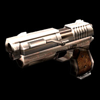
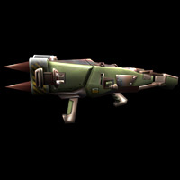
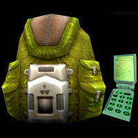

This section details all the weapons that can be used by the characters in Gore. Some weapons can only be used by some characters. The robotic characters of the very heavy class do not wield weapons and instead would only collect these weapons to get extra ammo, as all their weapons are built in.
|
|
The Meatsaw
Very deadly in tight spaces, the Meatsaw is a weapon which can not always be found in every level, which can give you the benefit of the element of surprise when you whip his out in close spaces and charge your opponent before they are able to know what hit them.
This weapon delivers massive damage on successful contact with the enemies body as well as draining stamina due to the massive amount of physical trauma, making escape difficult once they have been sliced into. |
|  |
UMC Pistol
This pistol is standard issue for all UMC soldiers. It is very durable and light weight and easy to handle.
As war has continued on for a long period of time, this pistol been stolen off dead and wounded UMC soldiers and has gradually become standard issue for the MOB as well.
This weapon allows for fast, accurate firing over long distances. |
|
UMC Shotgun
This portable shotgun follows the design benefits of the UMC Pistol. It is very lightweight and easy to handle, and also like many UMC weapons it is often found in the hands of the MOB as well.
This weapon fires strong blasts to cause good damage to enemies within close\medium range. Unique to this weapon vs. any other weapon you will encounter is the secondary ability to generate a force field large enough to guard your face. You can continue to fire while the force field is activated.
As with all shotguns, it is most accurate at very close ranges. |
|
UMC Riotgun
This portable machine gun is small, lightweight, powerful and good in close spaces. It can fire over distances very well for near pin-point accuracy. This weapon has often fallen into MOB hands, but has not replaced the favorite weapon of MOB's medium class soldiers.
The secondary ability of the Riotgun is gas grenades. These detonate on impact and release an initial burst of energy followed by a green gas for a short duration of about 7 seconds. Both of which drain lots of stamina. |
|
Dual Ingrams
The favorite weapon of MOB's medium class soldiers, dual ingrams cause heavy damage, with far more damage potential than the UMC Riotgun when wielded by skilled players with good aim. At close range the Dual Ingrams have the potential of taking down a UMC soldier in 1-2 seconds.
However the drawback to this weapon is their accuracy fails over a distance more than the UMC Riotgun, and they do not have the gas grenade capability either. Only Chan Lee uses this weapon. |
|
Quad Barrel
The favorite weapon of heavy class and one of the few weapons actually developed my the MOB, the Quad Barrel is unique by having become a favorite standard weapon for the heavy classes in the UMC as well.
This weapon is useable by all characters except mechs. It fires one barrel with each click of your fire button. If all four barrels are loaded you can also click your secondary fire button to fire all four barrels at once for massive damage.
As with all shotguns, it is most accurate at very close ranges. |
|  |
The Haw-90 - UMC Rocket Launcher
This weapon can be used by anybody and is the favorite weapon of most soldiers. The weapon can hold 4 rockets to a load, and reloads quickly because each load of 4 rockets comes in a light weight fixture that can be changed out like a clip on a bullet weapon.
The first fire mode will fire a single rocket. The secondary fire function fires the rocket in a grenade form which will detonate on impact with a player, but bounce if it hits anything else. |
|
Minigun
Wielding the mini-gun can be as easy as playing slots machines, which is why it's favored by many players. This weapon can be used by anybody and is deadly in all situations. It can be fired over a long range with great accuracy, and becomes a better choice of power weapon over the Haw-90 when enemies are far away and rockets take too long to reach your enemy.
The primary fire and secondary fire modes of this weapon are identical, except the secondary mode fires the weapon at an increased speed, which is somewhat of a "panic mode", for times when enemies are very close
|
|
Flamethrower
This weapon is can be used by anybody and like the Meatsaw cannot be found in all levels.
Primary fire unleashes a powerful burst of flames which will set fire to any opponents unfortunate enough to be caught in the blaze. Players hit will continue to burn for a duration even if they escape the blast of flames. Secondary mode fires a large ball of fire in a mortar-like arc which can be shot straight ahead at enemies or up in the air over very long distances. |
|
UMC Sniper Rifle
This weapon is can be used by anybody except the actual sniper classes who favor use of more traditional rifles.
Primary fire is a strong blast of energy that travels near instantly from the gun to the target it is aimed at, dealing heavy damage. It fires weaker blasts by default but holding your trigger can charge it up to a stronger blast. Secondary mode is a "panic fire" of sorts, shooting energy blasts that shock enemies, draining health and stamina. |
|
Assassin Rifle
This weapon is used by the sniper classes.
Primary and secondary fire modes both fire extremely powerful rounds. Like the Minigun the secondary fire of this weapon servers as a "panic mode" for situations where an enemy manages to get uncomfortable close to you. This will allow you a last chance to survive by draining your clip quickly in hopes of scoring a few good hits. |
|
Healing Gas (Not Included)
(This is a SE weapon. Healing Grenades are used instead). The healing class can use this effective unit to spray teammates with a potent gas which will give health to those who inhale it.
For healers to breathe it in themselves they need only to spray it against a surface directly in front of themselves. Walls work good, but other teammates work better when you will be healing two people instead of only one. |
|
Frag Grenades
These grenades have the capability to sense when they have left the close proximity of human contact (thrower's hand) and then again are within close proximity of human contact (enemy target). This allows them to be thrown at walls and bounced around corners with ease, but will detonate upon impact with an enemy.
They have recently been upgraded to respond to energy signatures of the power sources of mechanized soldiers. |
|
Molotov Cocktail (Not included)
(This is a SE weapon only. Flash Grenades are used instead). This is a favorite weapon of Chan Lee. While not technologically advanced, it gets the job done. This is an empty liqour bottle filled with flammable liquid with a cloth soaked in the same liquid shoved halfway into the bottle and taped in place. A band secures the cloth from whipping around while thrown.
When it is time to attack, the lighter is used to ignite the cloth, and the bottle is thrown. Upon impact the glass breaks and the splattered liquid fuel ignites. |
|
C4 & G4 Remote Bombs
These remote bombs are only used by the two scout classes. MOB has C4 bombs and UMC has the G4 bombs.
C4 is a deadly explosive charge which causes massive damage.
The G4 bomb is energy based and delivers a very brutal and effective electric discharge to harm any enemies within it's range. |
|  |
Remote Mini Nuclear Bomb
This weapon is in the hands of both the MOB and UMC. They are only in the Tactical modes which involve scenarios where your team must blow up an enemy target.
Primary fire will throw the satchel which contains the bomb. The satchel will stick to whatever surface it touches. The secondary fire will begin a 30 second countdown which is cancelled if you switch to another weapon or are killed. |